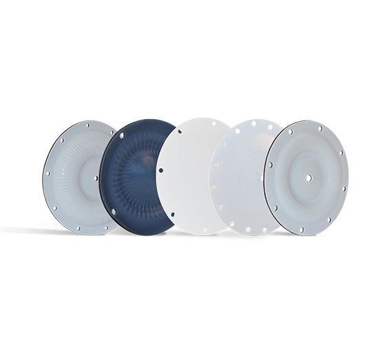

ONE-UP® 行业寿命最长 · 减少停机时间

Garlock 泵和阀门隔膜（Diaphragms）以 ONE-UP® 系列为代表，是行业内使用寿命最长的泵隔膜产品。从纯 PTFE 到一体式螺栓固定 PTFE 粘合橡胶隔膜，Garlock 提供满足各种苛刻应用需求的隔膜方案，显著减少隔膜泵、计量泵与调节阀的停机时间和维护成本，提高生产效率和运行安全性。
Garlock 制造最坚固耐用的泵和阀门膜片，从而缩短设备停机时间并提高生产力。无论是纯 PTFE 膜片还是 PTFE 粘结橡胶膜片上的一体螺栓，只要您有困难的应用或关键的应用，Garlock 都尽可能提供满足您需求的膜片。
上海物泽实业作为 Garlock 官方授权中国经销商，供应 ONE-UP® 泵隔膜、PTFE 隔膜、橡胶隔膜及阀门专用隔膜，支持按设备型号与图纸定制形状，快速交付。| 隔膜类型 | 适用介质 | 典型应用 |
|---|---|---|
| ONE-UP® 泵隔膜 | 磨蚀性浆料 | 隔膜泵、泥浆泵 |
| 纯 PTFE 隔膜 | 强腐蚀化学品 | 计量泵、化工 |
| 橡胶隔膜 | 水、一般介质 | 通用泵、调节阀 |
| 阀门专用隔膜 | 多种介质 | 调节阀、截止阀 |
以下为 Garlock 官方隔膜产品资料（PDF），涵盖 ONE-UP® 泵隔膜的产品系列与选型信息。